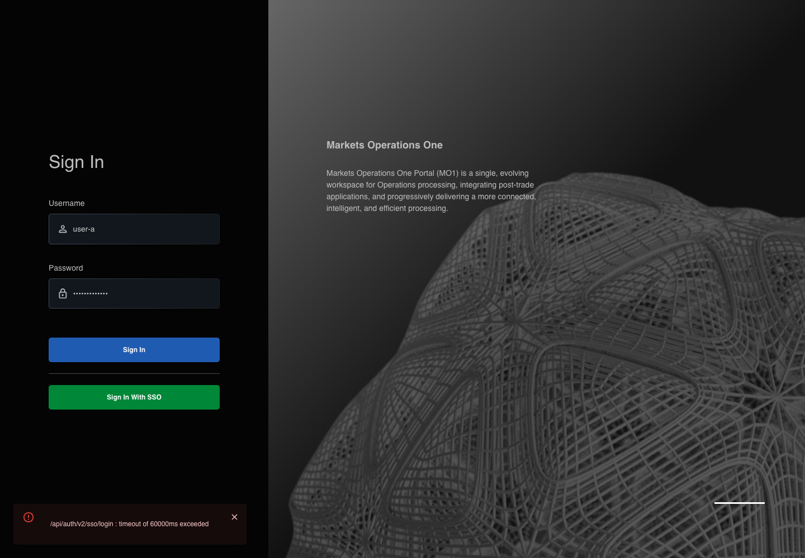

AUTH-027 actual React recovers controls after timeout
FAIL · application/run-002/auth-027-actual-react-recovers-controls-after-timeout-d68df83e2f76-attempt-1 · ACTUAL_APPLICATION_LOCAL_SERVICES
Actual mfe-base React application from the local webpack server. Controlled login API responses; no external identity service.
2026-10-22T04:15:05.766Z to 2026-10-22T04:16:07.915Z
Assertions and result · Artifact manifest · Exact run inputs and source hashes
Result SHA-256:072f4d8cb14dabdd8ebb8b6469245d5069ee01611cb6db602487174cca3c0f19Retained failure details
[
{
"message": "Error: \u001b[2mexpect(\u001b[22m\u001b[31mlocator\u001b[39m\u001b[2m).\u001b[22mtoHaveText\u001b[2m(\u001b[22m\u001b[32mexpected\u001b[39m\u001b[2m)\u001b[22m failed\n\nLocator: getByTestId('MicroWebUI_base_snackbar').getByRole('alert')\nExpected: \u001b[32m\"/api/auth/v2/sso/login : timeout of 60000ms exceeded\"\u001b[39m\nError: strict mode violation: getByTestId('MicroWebUI_base_snackbar').getByRole('alert') resolved to 2 elements:\n 1) <div role=\"alert\" direction=\"up\" class=\"MuiPaper-root MuiPaper-elevation MuiPaper-rounded MuiPaper-elevation6 MuiAlert-root MuiAlert-colorError MuiAlert-standardError MuiAlert-standard css-rgg0t8-MuiPaper-root-MuiAlert-root\">\u2026</div> aka getByRole('alert').first()\n 2) <div role=\"alert\" class=\"MuiPaper-root MuiPaper-elevation MuiPaper-elevation6 MuiSnackbarContent-root css-11hfw37-MuiPaper-root-MuiSnackbarContent-root\">\u2026</div> aka getByRole('alert').nth(1)\n\nCall log:\n\u001b[2m - Expect \"toHaveText\" getByTestId('MicroWebUI_base_snackbar').getByRole('alert') with timeout 70000ms\u001b[22m\n\u001b[2m - waiting for getByTestId('MicroWebUI_base_snackbar').getByRole('alert')\u001b[22m\n",
"stack": "Error: \u001b[2mexpect(\u001b[22m\u001b[31mlocator\u001b[39m\u001b[2m).\u001b[22mtoHaveText\u001b[2m(\u001b[22m\u001b[32mexpected\u001b[39m\u001b[2m)\u001b[22m failed\n\nLocator: getByTestId('MicroWebUI_base_snackbar').getByRole('alert')\nExpected: \u001b[32m\"/api/auth/v2/sso/login : timeout of 60000ms exceeded\"\u001b[39m\nError: strict mode violation: getByTestId('MicroWebUI_base_snackbar').getByRole('alert') resolved to 2 elements:\n 1) <div role=\"alert\" direction=\"up\" class=\"MuiPaper-root MuiPaper-elevation MuiPaper-rounded MuiPaper-elevation6 MuiAlert-root MuiAlert-colorError MuiAlert-standardError MuiAlert-standard css-rgg0t8-MuiPaper-root-MuiAlert-root\">\u2026</div> aka getByRole('alert').first()\n 2) <div role=\"alert\" class=\"MuiPaper-root MuiPaper-elevation MuiPaper-elevation6 MuiSnackbarContent-root css-11hfw37-MuiPaper-root-MuiSnackbarContent-root\">\u2026</div> aka getByRole('alert').nth(1)\n\nCall log:\n\u001b[2m - Expect \"toHaveText\" getByTestId('MicroWebUI_base_snackbar').getByRole('alert') with timeout 70000ms\u001b[22m\n\u001b[2m - waiting for getByTestId('MicroWebUI_base_snackbar').getByRole('alert')\u001b[22m\n\n at /Users/lushevol/code/github/ratan-release-impact/workbench/e2e/audit-specs/login-environment.spec.ts:279:36",
"location": {
"file": "/Users/lushevol/code/github/ratan-release-impact/workbench/e2e/audit-specs/login-environment.spec.ts",
"column": 36,
"line": 279
},
"snippet": " 277 | await audit.capture('request-pending', 'The credential request is pending before its native Axios timeout.', reference(failure.id));\n 278 | }\n> 279 | await expect(errorAlert(page)).toHaveText(failure.expected, { timeout: failure.mode === 'timeout' ? 70000 : 5000 });\n | ^\n 280 | await expectCredentials(login);\n 281 | await expect(login.signInButton).toBeEnabled();\n 282 | await expect(login.signInButton.getByRole('progressbar')).toHaveCount(0);"
}
]Machine observations
- canonical-mapping.json
da51e63d3274335f738dc10abbe873bd5e3a30c371b23651a7c8a7cb9315c0b3 - initial-context.json
c2a45ccd6256ff27178e7fc1963f91e82923ea76e1169c94a973cf5297896b79
Screenshot capture: CAPTURED. Named frames: 3.

The LOCAL login page is visible before the transport failure.
2026-10-22T04:15:06.375Z · 1440×1000Step: tasks/ui-test-coverage-20261022/test-cases.md#L1119; canonical assertion lines 1124, 1125, 1126, 1127, 1128, 1129
SHA-256:
99567bb3808af958792a6b38879d848938c08b417fb7dfff75bde75fcbd51a3a
The credential request is pending before its native Axios timeout.
2026-10-22T04:15:06.601Z · 1440×1000Step: tasks/ui-test-coverage-20261022/test-cases.md#L1119; canonical assertion lines 1124, 1125, 1126, 1127, 1128, 1129
SHA-256:
834edf00a4e74948d02ebe5360efe703449a572b5fda342849556a7ab9e5b495
The visible state when the test failed.
2026-10-22T04:16:06.953Z · 1440×1000Step: Test source: /Users/lushevol/code/github/ratan-release-impact/workbench/e2e/audit-specs/login-environment.spec.ts:261
SHA-256:
39abbc7e146fcf85ca21c30d391482374a005f1d6eebe3ee79ab7e6a4ca0f90eScreenshots establish visible state only. Assertions and traces support functional claims.